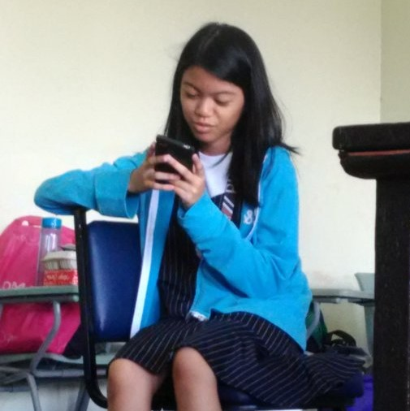
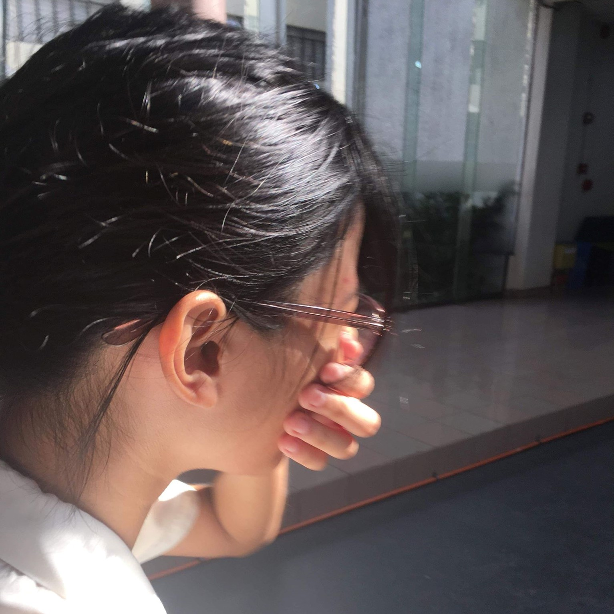
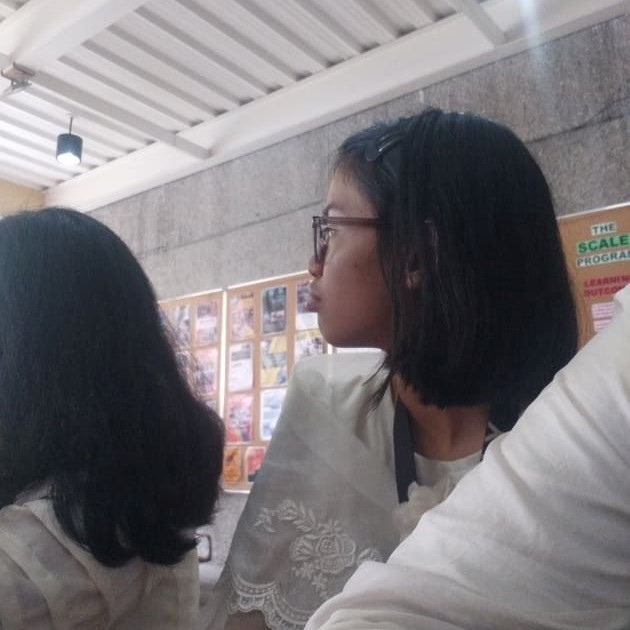
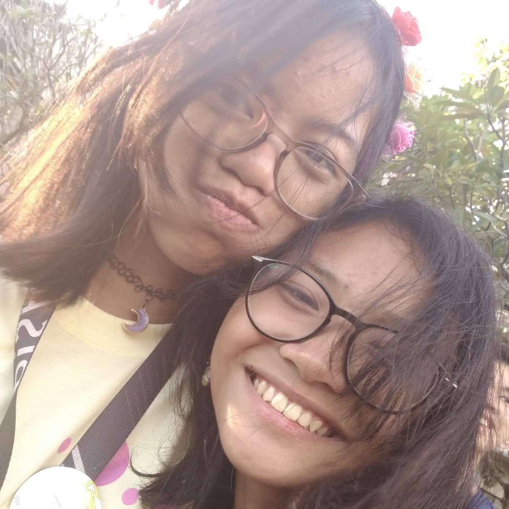

Mari
Grade 7 Section: Diamond
Previous Class Number: S25
Current Section: Strontium
Message to a friend:
`
Mari is another silent persona in real life - if you met her in class or through activities, you'd probably think she couldn't utter a word
other than her own name. But if you met her online, however - whether it be through Messenger group chats or somewhere in Twitter - you'd think
her a very loud, opinionated girl, who absoluteloy loves anime.
Mari is a talented artist. I've seen her doodle around the edges of her notebook, bringing life to fictional characters everywhere. You might notice
that she has the least number of pictures here, and that's because she often doesn't show her face. It takes a great deal of effort to catch her in a
photo - but it also takes a greater deal of effort to look for those rare pictures. It took me hours to even get ahold of two online, the rest being
from trusted sources, now that Mari finally does pose for pictures.
She also has an amazing voice, and a spirit that often fights for what she believes to be right. Mari's incredibly huggable and is
always someone I can go to whenever I need another strong voice.




